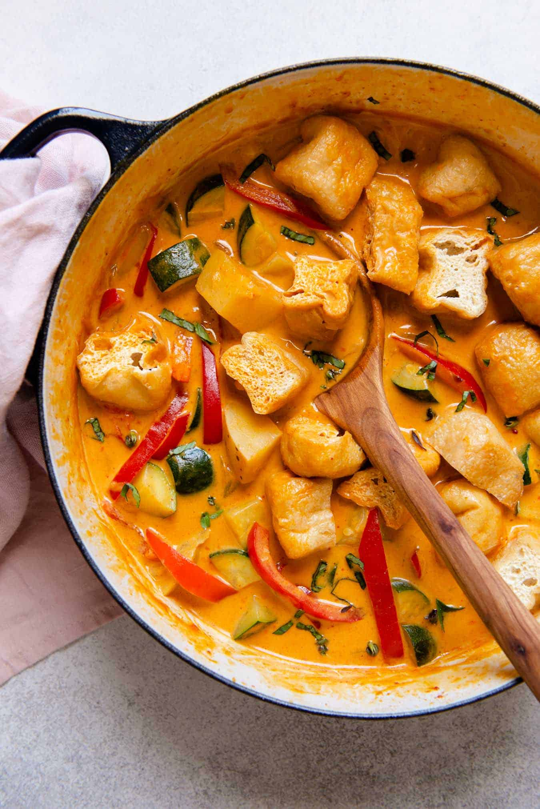

Vegetable Red Curry with Tofu Puffs

Description
Here is a Thai-inspired vegetable red curry recipe that makes a flavorful weeknight meal. It is a flexible vegan recipe that you can modify with whatever vegetables or protein that you have available.
Serve the vegetable red curry with jasmine rice!
Ingredients
- 2 stalks lemongrass, (see note 1)
- 5 Thai chilis, (see note 2)
- 2 tablespoons coconut oil, virgin or unrefined
- 3/4 cup chopped shallots
- 1 inch piece of ginger, sliced
- 2 tablespoons minced garlic
- 10 ounces yukon potatoes, cubed (see note 3)
- 3 tablespoons red curry paste, (see note 4)
- 1 teaspoon ground coriander, optional
- 1 1/2 teaspoons kosher salt
- 1 cup vegetable broth
- 1 (14-ounce) can full-fat coconut milk
- 1 large bell pepper, thinly sliced
- 1 large zucchini, diced
- 6 to 7 ounces tofu puffs, sliced in half
- 1/2 cup Thai basil, chopped
- chopped peanuts for topping, optional
Steps
- To prepare the lemongrass, peel off one outer layer of the lemongrass stalk. If the tops look thin and woody, chop them off. Then, chop the lemongrass stalk in half. Using a kitchen mallet, bash the stalk several times to bruise the lemongrass slightly.
- To prepare the Thai chilis, slice off the tops of the peppers. Then, slice them in half.
- Heat the coconut oil in a large pot (or a large sauté pan) over medium-high heat. Add the lemongrass, chilis, shallots, and ginger slices. Cook for about 3 minutes, stirring frequently. Add the minced garlic and cook for 30 seconds to 1 minute, until fragrant. Transfer the potatoes to the pot, along with the curry paste, coriander, and salt. Stir to coat the potatoes with the curry paste.
- Pour the vegetable broth into the pot and cover it with a lid. Bring the broth to boil. Reduce the heat to medium-low, and cook the potatoes for 3 more minutes.
- Add the coconut milk, bell peppers, and zucchini to the pot. Cook everything for another 5 minutes, partially covered. Add the tofu puffs to the pot and cook until heated through, about 1 to 2 minutes. (see note 5) Check to make sure that the potatoes are fork tender.
- Turn off the heat and stir in the chopped basil. Serve the vegetable red curry in bowls along with cooked jasmine rice. Garnish the curry with chopped peanuts, if you like.
- Refrigerate any leftovers in airtight containers. The curry tastes even better the next day!
Notes
- I can usually find lemongrass stalks in the produce sections of supermarkets. If you can't find fresh lemongrass, consider using Gourmet Garden's lemongrass paste. You'll need 2 tablespoons of the paste for this recipe. Note that the paste contains milk solids.
- If you are averse to spicy foods, you can use 1 or 2 chilis or leave them out entirely.
- I chopped the potatoes into 3/4-inch to 1-inch chunks. I used yukon potatoes when I developed the recipe, but any potato will.
- Note that some curry pastes are not vegan. Some contain traces of shrimp or other shellfish. Thai Kitchen and Maesri sell red curry pastes that do not contain shrimp. Also, if you are using a new brand of curry paste, make sure to taste it first to gauge the level of spice. I used Thai Kitchen's red curry paste, and I don't find it spicy at all, which is why I used 3 tablespoons in this recipe.
- I like adding tofu puffs at the very end so that I don't overcook them.
Link to the original detailed recipe with exhaustive explanations. I take no credit for it.